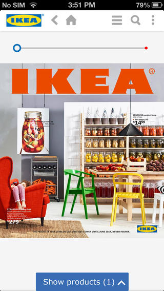
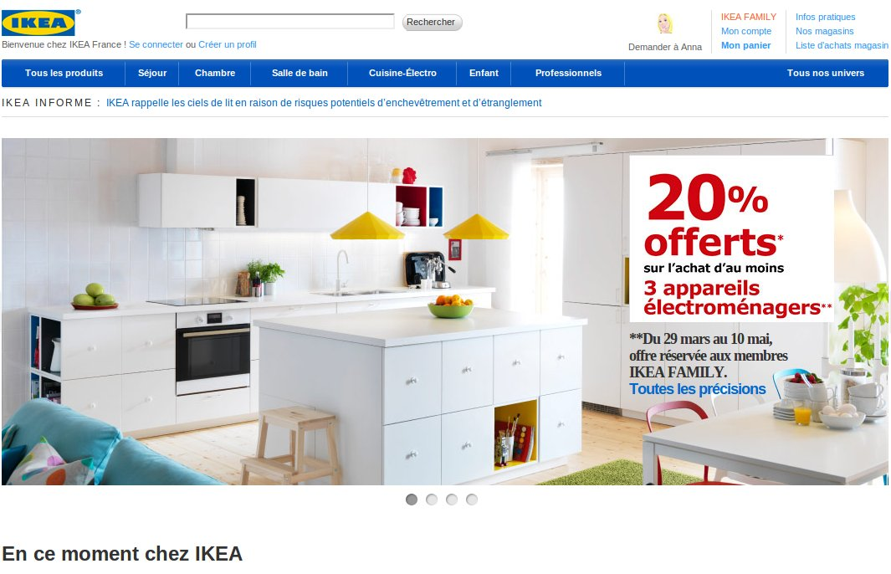
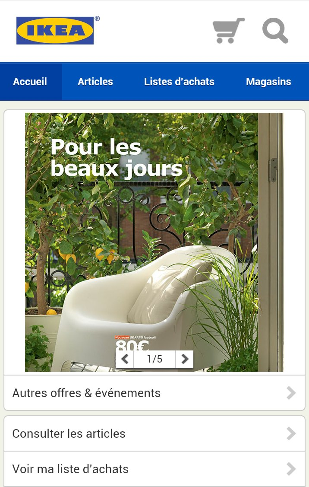
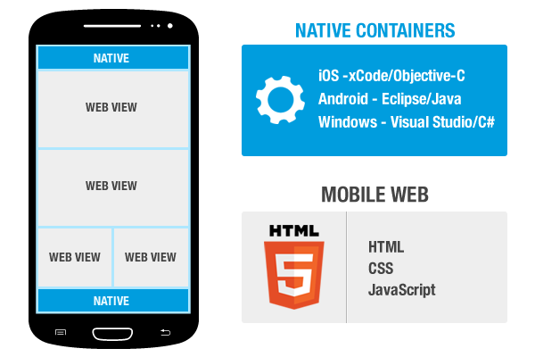
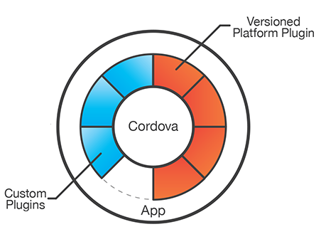
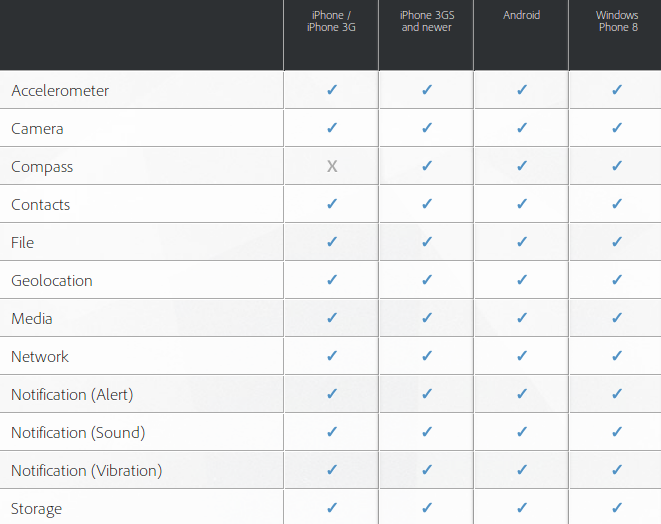
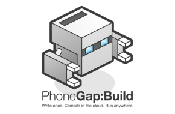

Phonegap
au sein du projet eInventaire
Created by Matthieu Hostache / @twMatthieuH
Sommaire
- Le projet eInventaire
- Les différents types d'application mobile
- Le framework Phonegap
- L'application mobile eInventaire
Le projet eInventaire
Dans le contexte d'un certain déménagement.
Le projet eInventaire aujourd'hui
- + de 10300 QRCODES
- Un accès à tout les projets
- « Self made » et donc adaptable aux besoins (archives, mouvements, lien avec Paloma)
Les applications existantes
- Application Web (PC)
- Application Android (tablette)
- Base de connaissance type Wiki (SharePoint)
Les différentes types d'application mobile
Native , WEB ou Hybride ?
Les applications natives
Android > Java > Eclipse
Windows Phone > C# > Visual Studio > Windows
iOS > Objective-C > xCode > OSX > MAC
Application native iPhone
Les applications WEB
Code adapté ou "Responsive Design"
 Site WEB vs WEB App
Les applications hybrides
Un code unique
Fonctionnalités natives
Distribution (stores)
Phonegap
Easily create apps using the web technologies you know and love: HTML, CSS, and JavaScript
Phonegap
-
Historiquement
- Développé par Nitobi Sofware
- Développé par Adobe
- Donné à la Fondation Apache en 2011
- Une distribution d'Apache Cordova
-
Sous licence Apache 2 :
- Accès au code source
- Droit d'usage / de duplication
- Redistribution monétisable
How it work ?

Phonegap 3.0 : tout est plugin
Répertoire des plugins cordova : plugins.cordova.io
Le "gap"
Bientôt : Firefox OS, Ubuntu, Chrome Apps
Testing & Debug
- Navigateur / Ripple
python -m SimpleHTTPServer
npm install -g ripple-emulator - Livereload : plugin Gapreload
- debug.phonegap.com avec Weinre
- Remote Debug avec Webkit (Android 4.4 / iOS6)

- Compile vos apps dans le cloud
- Signer rapidement les applications
- Gestion / simplication des phases de test
Démo !
Retour d'XP : Avantages
- Un code unique
- Accès à tout les frameworks & librairies WEB
- Outils Phonegap (by ADOBE)
Retour d'XP : Inconvènients
L'application eInventaire
Les fonctionnalités
- Authentification AD
- Base locale synchronisés (unidirectionnelle)
- Recherche de matériels & localisations
- Scan de QRCodes
- Autres : favoris, authentification hors-ligne,...
Technologies utilisées
+ 
- Phonegap / Cordova
- Angular
- Localstorage
- Undescore.js